13 康波体系下的黄金价格
历史上业界对黄金的观点一直众说纷纭，有关黄金定价机制的研究结果在不同的分析框架下往往相差甚远。我们认为，造成这一现象的原因与分析师在研究方法上的两点不足之处有关。其一，没有从长周期的视角去分析黄金市场的波动规律。其二，在解释金价上涨或下跌的原因时，将黄金的众多属性强行杂糅并与金价的运行相叠加。黄金市场的发展贯穿了过去300余年资本主义体系里金融组织机制的演进历程，在跟随货币制度和经济周期变迁的过程中，黄金的投资价值与货币信用属性已经充分交织渗透，使其定价机制不断趋于复杂化，简单地根据短期价格波动或孤立的属性去分析金价的运行显然无法透析黄金市场的根本规律。实际上，黄金市场的运行逻辑在不同历史时期并不是一成不变的，由自身不同级别的属性所驱动的价格运行是其背后更深层的原因。而康波理论体系为我们从长周期的视角解读黄金价格的波动规律提供了最佳的分析框架。
基于康波的视角，我们发现金价的长期运行呈现出明显的、与长波运行相对应的周期性特征。黄金的实际持有收益率在康波的衰退和萧条期趋于上行，在萧条期达到高点，而在复苏和繁荣期趋于下降。如果长波周期从复苏到萧条的运行代表着经济增长的轨迹，那么黄金价格的走势则可以被视为经济增长的反面。以长波衰退期为起点，黄金资产将步入长期牛市，并且在萧条期5～10年的超级行情中获取显著的超额收益。
黄金的核心属性是「信用对冲」。当美国经济强、美元体系稳固时，黄金表现平淡——没人需要避险。当美国经济弱、美元体系动摇时，黄金起飞——大家对纸币体系失去信心。金价走势就是经济增长的反面。在康波复苏和繁荣期持有黄金甚至跑不赢通胀；从衰退期开始黄金进入长期牛市，萧条的5～10年是最暴利的阶段。
2016年9月的判断：康波正处于衰退→萧条的转换期，黄金战略配置窗口已经打开。短期可能有库存周期反弹（经济企稳→加息预期→压制金价），但长波位置决定了压制的边际阻力很弱。本章用周期框架重塑了黄金价格的研究体系，从四个层次解读金价的波动。
通过研究我们发现，以周期的维度进行划分，黄金价格的运行存在不同级别的周期波动模式，而这些周期性波动规律本质上是黄金不同级别的属性在金价运行中的体现。站在长周期的视角看，金价跟随全球经济长波周期和货币体系的演进所呈现的波动规律对应着其根本属性——信用对冲，这一属性表现为金价的长期波动与实体信用和货币信用的反相关，也就是美国实体经济增长格局和美元体系的稳固性是驱动黄金价格长期走势的根本因素。从中期来看，在购买力因素的驱动下，黄金的商品属性得到释放；受商品属性的驱动，黄金价格主要遵循大宗商品产能周期的规律运行。而如果将分析视角进一步收窄，我们发现，全球风险偏好是影响黄金价格短期波动的核心因素，受市场风险偏好的推动，黄金-金属比在库存周期层面存在明显的反向波动规律。此外，基于历史数据的数量关系分析也帮助我们进一步确认了黄金市场的短期运行所要遵循的基本规律，实际利率、美元、大宗商品价格以及马歇尔K值的走势能够在很大程度上解释黄金价格的短期波动。2016年以来，黄金的反弹是超额流动性释放、通胀预期以及美联储修复全球风险共同助推的结果。
对于未来黄金资产的投资策略，我们得出以下结论。首先，从大的波段来看，2016年已经到了配置黄金资产的重要时点。但在后续库存周期的上行期，我们将继续感知全球经济阶段性企稳和价格体系修复的动力，在风险偏好相对提升的情况下，顺应价格上涨的投资逻辑仍是主线，这一阶段美联储加息概率的逐步提升成为金价的抑制因素。当本轮库存周期运行至中后期时，经济动力的逐渐消竭、实际利率的走低以及避险情绪的扩散将明显推升黄金资产的相对收益。本轮库存周期行至尾声、经济特征开始向通缩转换之时，也是本轮康波周期由衰退向萧条切换的开始，而站在长周期的角度看，彼时的黄金将拥有更高的相对投资价值。上述结论说明，以本轮库存周期为起点，黄金资产的配置价值在逐渐增强，虽然在这个过程中全球库存周期共振所带来的经济企稳和加息预期有可能降低黄金资产的相对收益，但长波的位置决定了其边际阻力必定疲弱。相对于短期可能会出现的小幅折返，黄金资产战略投资阶段的来临才是当前市场需要关注的重点。
黄金有四层属性，每层对应不同时间维度：
长期（康波级）：信用对冲——对标美国经济+美元体系的稳固性。这是根本属性，决定了黄金的大方向。
中期（产能周期级）：商品属性——黄金也是大宗商品，跟随产能周期25-30年的大节奏。
短期（库存周期级）：避险属性——全球风险偏好波动→黄金-金属比反向波动。市场恐慌→金价相对金属走强。
结构级：货币锚属性——实际利率、美元指数、通胀（马歇尔K值）等短期定价因子。
2016年黄金配置的核心策略：大方向是战略配置窗口已经打开。短期节奏上，库存周期上行期（2016-2017）经济企稳+风险偏好回升→黄金可能被加息预期压制，阶段性跑输商品和股票，但这是买入机会。最佳时机在库存周期中后期，经济动力衰竭+实际利率走低+避险升温→黄金相对收益大幅提升。库存周期尾声=康波衰退转萧条=黄金的「甜蜜点」。
基于康波的视角，我们可以清楚地透析金价在长周期运行中所呈现的波动规律。按照长波周期不同阶段的演进顺序，黄金价格的运行依次表现出的特征为：在康波的复苏和繁荣期，黄金实际持有收益率普遍趋于下行，也即金价的上涨速度达不到同期物价水平的上涨速度。这意味着在基本面坚实、实体增长动力充盈的经济阶段，持有黄金资产不仅无法获得超额收益，甚至不能满足投资人的保值需求。造成这一现象的关键，在于强劲的经济潜在增速所产生的高额的机会成本以及利息损失。
在康波周期进入衰退阶段后，黄金价格的波动幅度和频率都明显加剧，这与康波衰退期物价的大幅波动有关。基于我们对康波周期中的价格波动问题的研究，最近三次康波的运行在走向萧条的过程中价格都是冲高回落的，价格体系的动荡是造成康波衰退冲击的重要来源，也是刺激黄金价格抬升的重要推动力量。以此为起点，黄金资产价格将步入长期牛市，并且在萧条期5～10年的超级行情中达到高潮。
在滤去金价的短期小幅波动后，我们可以更明显地看到，金价在长期趋势中呈现出与康波运行相对应的周期性特征。黄金的实际持有收益率在康波的衰退和萧条期趋于上行，在萧条期达到高点，而在复苏和繁荣期趋于下降。如果长波周期从复苏到萧条的运行代表着经济增长的轨迹，那么黄金价格的走势可以被视为经济增长的反面。在相对价格方面，根据黄金与金属和农产品的名义价格比，在长波复苏、繁荣和衰退早期的大部分时间，黄金价格相对于其他商品平稳运行，但从衰退晚期到萧条期，黄金表现出非常明显的超额收益，这是黄金资产与其他商品的重要不同。在相对收益方面，从黄金价格与道琼斯工业平均指数的走势也可以看出，黄金资产在长波周期上行阶段的表现弱于股票，但从衰退晚期到萧条期的收益却远远超过股票资产。从近三次长波演进的历程来看，每一次萧条期金价的涨幅都较前一次有所增加，也即实际金价的波动中枢有不断抬升的趋势（见图13-1至图13-4）。
康波各阶段黄金表现规律：
康波复苏+繁荣期→黄金跑输。经济基本面好，实体增长动力足，持有黄金的机会成本高——你拿着不生息的黄金，错过了投资实体的高回报。
康波衰退期→黄金波动加剧，开始走牛。物价大幅波动冲击经济体系，黄金作为避险资产受到追捧。这是黄金牛市的起点。
康波萧条期→黄金超级行情！5-10年最暴利阶段。衰退晚期到萧条期，黄金不仅绝对收益惊人，相对其他商品和股票的收益更是碾压级别。每一次萧条的黄金涨幅都比上一次更大（波动中枢不断抬升）。
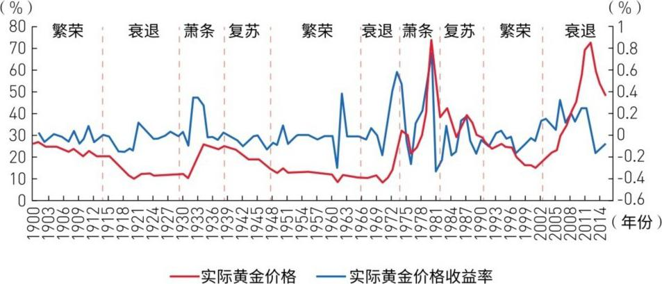
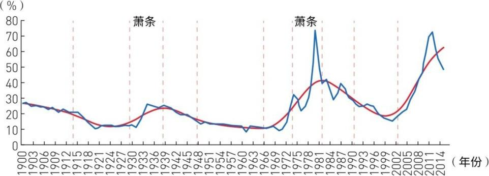
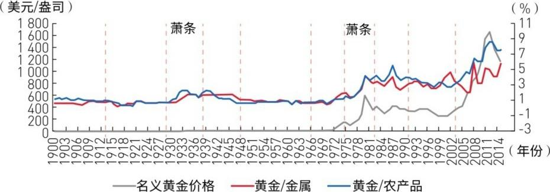
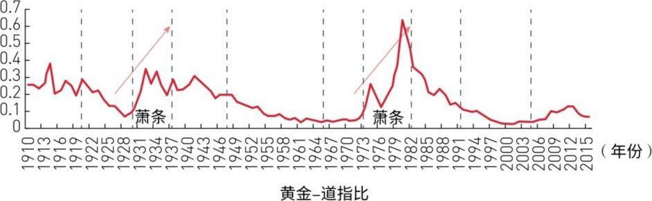
当前康波运行阶段的定位——衰退转萧条。按照康波周期的运行规律，自20世纪90年代开启的长波繁荣期于2004年宣告终结，自那之后我们正式进入世界长波周期的衰退阶段。在衰退期拐点的两三年后，全球经济经历了2008年的金融危机，之后于2014年经历了美元升值给全球带来的二次冲击。以2008年全球金融危机为始，世界经济结构问题不断，欧债危机、产能过剩、人口老龄化等甚嚣尘上，由技术、人口、资源禀赋以及政治环境等长期因素决定的经济潜在增速的下滑已不可避免，而世界经济体相继进入负利率时代也标志着本轮凯恩斯主义的需求刺激已走到尽头。从历史看，每个经济短周期下行叠加中长期结构问题都会使全球陷入危机模式。
当前康波周期的位置是从衰退向萧条过渡期的后半段，前两次康波周期的同一阶段，一次是20世纪70年代的原油供给冲击引发滞胀，另一次是1929年「大萧条」前期。康波陷入萧条期的前兆是，全球陷入严重的结构性困局，需要一次经济危机式的产能出清才能恢复供需平衡。以我们对长波周期运行规律的研究来看，在未来的3～5年里，由我们所处的本轮中周期的危机所产生的萧条将带领我们从康波的衰退期进入萧条期。结合金价在长周期中的运行规律，黄金资产在当前的长波时点具有很高的配置价值。然而，大周期走向萧条的过程不是瞬间完成的，在长期结构逆流中，第三库存周期的反弹将带来经济阶段性企稳以及价格体系的修复，而黄金市场在长波周期内部的运行逻辑是我们需要进一步关注的问题（见图13-5）。
当前定位（2016年）：康波从衰退向萧条过渡期的后半段。回顾时间线：1990年代开启繁荣→2004年繁荣结束→2008年一次冲击（全球金融危机）→2014年二次冲击（美元升值）→2016年正在衰退转萧条的过程中。历史上的同一阶段是什么？一次是1970年代石油危机引发滞胀，另一次是1929年大萧条前期——都不是闹着玩的。
康波萧条的前兆：全球陷入结构性困局，需要一场危机式的产能出清才能恢复平衡。未来3-5年，中周期危机产生的萧条将把我们正式带入康波萧条。结合金价规律，黄金在当前时点有极高的配置价值。但大周期走向萧条不是瞬间完成的——第三库存周期的反弹会带来经济阶段企稳，这是需要注意的节奏问题。
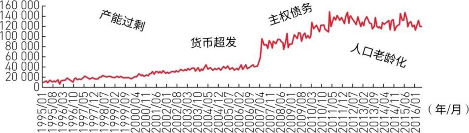
依上所述，从康波周期的衰退晚期到萧条期，黄金资产在巨幅波动中将获取显著的超额收益，这是其与一般商品价格波动的重要不同点，也是黄金的信用对冲这一根本属性的体现。而金价在长周期内部的运行规律是需要我们进一步研究的问题。我们注意到，在长波的复苏、繁荣以及衰退初期，黄金价格呈现出与其他商品相对平稳运行的状态，这为我们探索黄金价格在长周期内部的波动规律提供了重要线索。
这一段承上启下：康波萧条期黄金走出独立超级行情（信用对冲主导），但长波其他阶段黄金怎么走？我们发现——复苏、繁荣和衰退初期，黄金与铜、油等大宗商品的走势高度同步。这说明在经济系统正常运转时，黄金主要体现商品属性，跟着产能周期的大节奏走。但当经济走到衰退晚期→萧条期，信用对冲属性被激活，黄金脱离商品走出独立暴涨行情。简单记：正常时期黄金是商品，危机时期黄金是货币。
黄金价格与大宗商品周期。在第11章中，我们基于100年来工业金属、能源的实际价格和产能数据序列分析并得到以下结论。（1）以固定资产平均使用时间为基准，大宗商品价格波动存在30年左右的产能周期特征，其中产能的上升期约为10年，下降期约为20年，在产能周期到达高点附近后，大宗商品价格将进入一个7～8年的剧烈下降阶段，随后进入漫长的横盘期。（2）从实际价格与长期趋势的偏离来看，以金属为代表的商品价格存在一个平均18～20年的周期性波动，参考学术界的文献，我们将其称为超级周期，其波动特征受到产能周期的显著影响。（3）一个超级周期内部存在三个显著的小级别周期波动规律，类比厄尔尼诺以及涛动指数循环现象，我们称其为大宗商品的涛动周期。
值得注意的是，通过叠加实际黄金价格与大宗商品周期我们发现，在长波周期内部，实际金价的运行与以油气、工业金属为代表的大宗商品产能周期的走势基本吻合。在大宗商品产能周期的10年上行期中，实际金价步入上升通道，而在产能周期的20年下行期，实际金价趋于震荡走低。尤其是在长波复苏和繁荣期，黄金-金属、黄金-农产品相对价格基本围绕一个固定中枢平稳运行。虽然相对于一般商品来说，黄金的价格波动表现出明显的独立性，但就中期而言，黄金与其他大宗商品的走势基本保持一致。也就是说，在中期，黄金的商品属性得到释放，在商品属性的驱动下，黄金价格按照商品产能周期的规律运行，并且在长期走势上仍然服从长波的形态。
从黄金与大宗商品的关系来看，以能源、工业金属为代表的大宗商品价格走势是影响黄金价格波动的重要因素。基于大宗商品周期的演进逻辑，本轮商品的产能周期和超级周期同时于2011年触顶，至今已有5年半的时间，无论从产能周期还是超级周期的角度看，大宗商品价格的下跌期都远未结束。也即从长期来看，大宗商品的熊市仍将延续，这一点从大宗商品市场自身以及全球经济长周期的趋势中都能得到验证。显然，大宗商品价格的长期运行仍然趋于弱势，但是从大宗商品价格运行形态我们可以推导出，无论是产能周期的主跌段还是超级周期的下跌期，大宗商品价格在最终触底前的两三年将出现双底形态，也就是在2016年出现年度级别的反弹。而除了大宗商品市场自身的特征，全球经济运行的逻辑与第三库存周期的节奏是支撑大宗商品上涨的实体经济层面的关键因素（见图13-6至图13-8）。
这一段信息量极大，分三层理解：
第一层：黄金在中期就是商品，跟随产能周期。周金涛在第11章系统研究了大宗商品周期，发现三个嵌套规律——① 产能周期约30年（10年上升+20年下降），对应固定设备的新旧交替；② 超级周期18-20年（用BP滤波把长期趋势剥掉后的"净波动"），跟随房地产周期；③ 涛动周期（一个超级周期内部的三段小波动，类似厄尔尼诺现象）。把黄金价格叠加上去发现：在产能周期的10年上升期，金价跟着涨；在产能周期的20年下降期，金价跟着跌。在长波复苏和繁荣阶段，黄金相对于金属和农产品的价格基本围绕一个固定中枢波动——说明这时候黄金就是"普通商品"，没什么特殊性。
第二层：当前处于什么位置？本轮产能周期和超级周期同时在2011年见顶，到2016年已经跌了5年半。从产能周期看，下跌期远未结束（通常20年），大宗商品长期熊市还在继续。但从价格形态看，无论是产能周期的主跌段还是超级周期的下跌期，在最终触底前2-3年都会出现"双底形态"——先有一个年度级别的反弹（第一底），然后再探底（终极大底）。2016年就是那个第一底的位置。这个反弹不是黄金独有的，是所有大宗商品共有的，驱动力来自第三库存周期的经济阶段性企稳。
第三层：关键认知——黄金什么时候脱离商品？正常时期（复苏、繁荣、衰退初期），黄金跟商品一起走。但到了衰退晚期→萧条期，黄金的信用对冲属性爆发，就会脱离商品走出独立的超级行情（1970年代金价涨20倍就是例子）。所以2016年黄金跟着商品反弹是合理的，但真正的大机会在商品反弹结束、经济走向萧条之后。
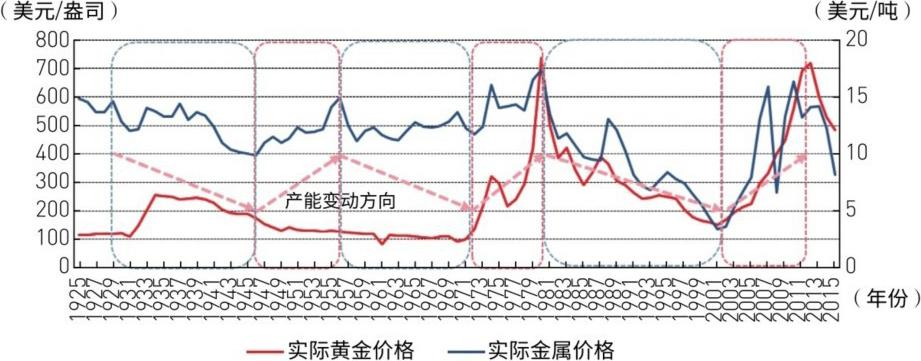
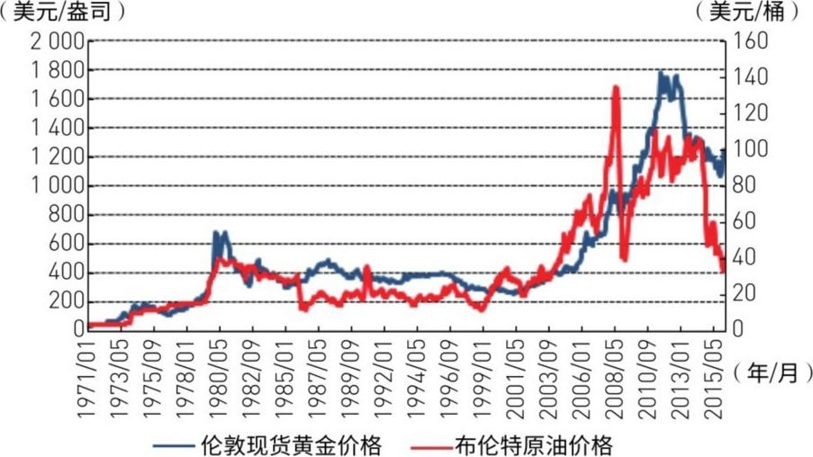
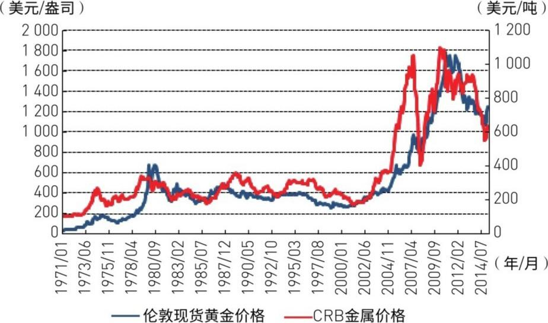
中周期、库存周期中的黄金价格波动。从金价在中周期和库存周期的运行特征来看，中、短经济周期对黄金价格产生的直接影响并不显著，黄金的走势在更大程度上依然服从长波周期和商品产能周期。这说明，金价的波动问题超越了中周期或者库存周期的范畴。但通过研究我们发现，在中、短周期内黄金价格的运行仍然有其特有的周期性规律，只不过这种规律体现在与其他商品价格的相对运动中。通过库存周期的划分，我们可以明显地看到黄金-金属比在小周期层面的波动特性。
基于1975年至2014年黄金-金属比在一共13轮库存周期中的表现，我们发现其走势与库存周期的运行趋势呈严格的反相关关系，也即黄金在库存周期上行期的表现要弱于金属，而在下行期的表现强于金属。从经济基本面的演化逻辑来看，库存周期的上行期伴随着实体需求的复苏、通胀水平的抬升和风险偏好的修复，因此，代表工业需求和风险资产的金属走势相对更强。而一旦库存周期运行至高点，实体经济开启下行趋势，在需求下滑和避险情绪的带动下，黄金相对于金属的表现就会更加强势。事实上，通过对黄金-白银比和黄金-原油比的周期划分，我们也可以得出类似的结论（见图13-9至图13-11）。
库存周期层面的实战规律：
经济下滑、风险偏好低→黄金-金属比上升（黄金跑赢金属）。
经济复苏、风险偏好回升→黄金-金属比下降（金属跑赢黄金）。
1975-2014年共13轮库存周期的数据验证：黄金-金属比与库存周期严格反相关。库存周期上行（经济好）→金属强。库存周期下行（经济差）→黄金强。这个规律在黄金-白银比、黄金-原油比上同样成立。
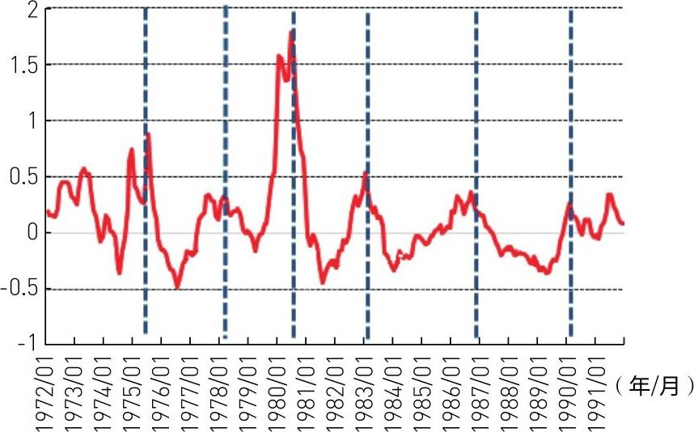
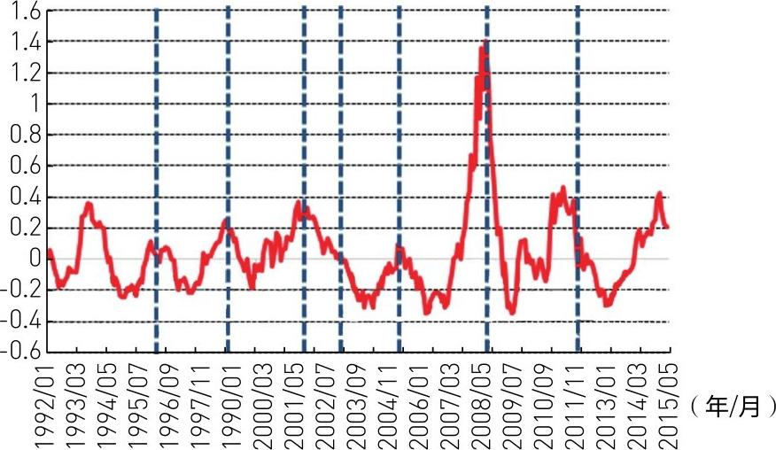
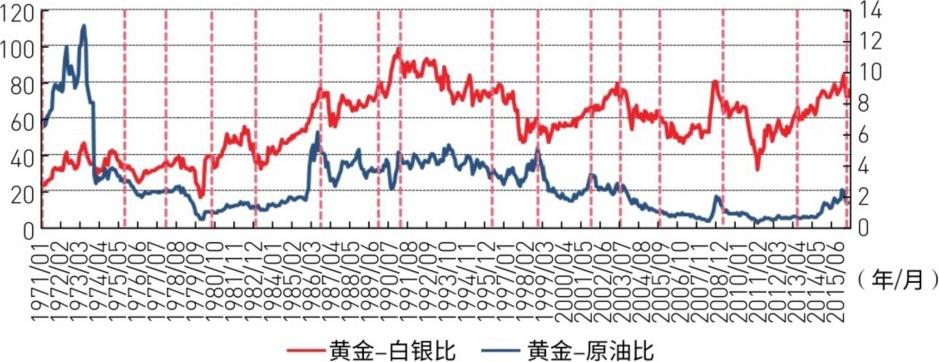
综合以上基于经济周期的框架对黄金价格波动特征的分析，我们可以看到，康波周期的运行决定了黄金价格的根本走势，而黄金价格在中、短周期内并没有明显的波动规律，其更大程度上是在跟随大宗商品周期的节奏运行。其中的原因在于，黄金价格的走向受到黄金市场供需、通胀水平、货币汇率、经济预期和金融稳定等因素的直接或间接影响，在经济系统正常运作时，黄金的定价机制始终保持相对稳定的状态。而只有当全球经济系统运行至特定阶段，市场信用和货币体系出现大幅动荡时，黄金的定价机制才会发生根本性变化，此时黄金价格将在货币信用对冲属性的释放下迎来超级行情。对中周期和库存周期而言，虽然其对全球经济以及市场体系的运作存在显著的影响，但其冲击级别还不足以扭转黄金的定价机制，这就解释了为何黄金价格的周期性波动只体现在长波运行中，而其在中短经济周期内只呈现出相对价格波动的特征。
总结：康波决定黄金的根本走势。中短期黄金没什么独立行情，跟着大宗商品周期走。为什么？因为经济系统正常运行的时候，黄金定价机制稳定。只有当市场信用和货币体系出现大动荡时（康波衰退→萧条），黄金的信用对冲属性才会爆发，定价机制发生根本变化——这才有超级行情。中周期和库存周期的冲击级别不够，不足以扭转黄金的定价机制，所以黄金在中短周期只是相对价格在波动，没有独立的大行情。
以上我们基于周期的维度对黄金价格的波动规律做出了全方位的解读，金价所呈现出的不同级别的周期波动模式实质上是黄金不同级别的属性在金价运行中的体现。从长期来看，金价跟随全球经济长波周期的演进所呈现的波动规律对应着黄金的根本属性——信用对冲。而在中期，商品属性驱动着黄金价格遵循商品产能周期的规律运行。如果将分析视角切换至短期，我们发现，黄金-金属比在库存周期层面呈现出明显的反向波动特征。以上周期框架的搭建重塑了黄金资产投资的研究体系。而关于金价在周期框架下的运行逻辑，我们认为应该回归黄金的定价机制去解读。近代以来，黄金的投资与货币信用属性在跟随货币制度和经济周期变迁的过程中交织渗透，其价格波动由来自货币层面、购买力层面以及避险情绪等层面的市场变量共同主导，因此，对金价各影响因素及其重要程度的分析是厘清黄金价格运行逻辑的重要切入点。
前面用周期框架梳理了黄金「什么时候涨、什么时候跌」的规律。现在要深入一层：为什么涨、为什么跌？答案是黄金的四层属性——信用对冲（长期）、商品（中期）、避险（短期）、货币锚（结构）。每层属性对应不同时间维度，由不同的市场变量驱动。理解了这个分层框架，就能同时解释：为什么黄金在1970年代涨了20倍？为什么2001-2011年跟着商品一起涨？为什么2016年初突然反弹？三个看似矛盾的现象，答案都在这四层属性里。
如何解读黄金的根本属性——信用对冲。如果长波周期从复苏到萧条的运行代表着经济增长的轨迹，那么实际金价的走势可以被视为经济增长的反面。金价伴随康波周期的运行所表现出的运行规律应该如何去解读，这种长周期波动背后所反映的本质又是什么？对于黄金价格在长期趋势上发生的根本性变化，仅仅通过作用于黄金价格的市场变量的高低波动显然不足以解释清楚其背后的原因。事实上，理解黄金的根本属性才是弄清这一问题的关键。1971年美元与黄金脱钩后成为世界货币体系的中心货币，但在浮动汇率制与信用制度下，美元的价值不稳定和长期趋向贬值是国际社会普遍担忧和不满的一个问题。作为曾经的实物货币以及后来的货币之锚，黄金的真实价值相对于美元更受国际社会认可。
我们认为，黄金的根本属性为信用对冲，这一属性表现为金价的长期波动与实体信用和货币信用反相关。其中实体信用反映了长波主导国经济增长格局的相对强弱，货币信用反映了全球信用货币制度下货币体系的稳固性。具体而言，也就是美国实体经济增长格局和美元体系的稳固性是驱动黄金价格长期走势的根本因素。这背后的逻辑在于，在经济基本面具备坚实基础的复苏和繁荣期，由强劲的经济潜在增速所产生的高额的机会成本以及利息损失将大大削弱黄金资产的持有收益，并且美国实体经济的繁荣将支撑美元体系的平稳运行，我们在前面讲过，长波繁荣前期主导国货币将处于强势货币地位，这也成为实际金价在长波复苏和繁荣阶段的抑制因素。而进入长波的衰退期后，随着实体经济动力的消竭，黄金资产的相对收益将逐步显现，来自价格体系的动荡既是造成康波衰退的重要冲击来源，也是刺激金价抬升的重要推动力量，最终在全球实体信用和货币信用恶化的驱动下，黄金价值将迎来回归之旅。
对黄金根本属性的认识有助于我们理解黄金价格与美国实际利率、美元指数的关系。正常情况下，全社会平均风险折减收益率可以用实际利率来代表，虽然政府的调控可以人为地驱使实际利率短期偏离均衡值，但长期来看，实际利率的变动趋势能够良好地反映经济增长和社会信用的稳固程度。从以10年期美国国债实际收益率为代表的实际利率与黄金价格的关系可以看出，黄金价格与实际利率在长周期维持稳定的负相关关系，并且黄金价格运行的重要高点均与实际利率的低点相对应。此外，在浮动汇率与信用制度下，衡量美元强弱的是相对于其他主要国际货币的比价，而各种货币的风险折减收益率是影响汇率的核心因素，这就决定了实际利率的上升期也是美元的强势期，美国实际利率水平和美元之间总是保持同步关系，实际利率和美元的共同走高将给黄金带来显著的下行压力。
上述结论说明，美国实际利率的长期趋势可以被视为黄金价格长期走势的核心影响变量。在康波衰退和萧条阶段，实际利率水平将在经济潜在增速下滑和实体信用恶化中走低，从而驱动黄金资产获得巨额的相对收益。但同时需要说明的是，在康波复苏和繁荣阶段，美国实际利率对黄金价格的驱动作用将明显减弱，此时黄金价格在中期将更多跟随商品周期波动。这意味着在美国实体经济增长旺盛、美元体系稳固的阶段，黄金的信用对冲属性被暂时弱化，商品属性成为主导（见图13-12、图13-13）。
黄金的根本属性：信用对冲。含义：金价长期波动与美国实体信用和美元货币信用反相关。
逻辑链：美国经济强→实体信用强→美元体系稳固→高实际利率→持有黄金的机会成本高→金价被压制。美国经济弱→实体信用弱→美元体系动摇→实际利率走低→黄金起飞。
实际利率是关键中介变量。黄金与实际利率长期负相关——实际利率的长期趋势就是金价的长期趋势。实际利率低点=金价高点。而且实际利率和美元指数是同步的——实际利率上升→美元走强→双重压制黄金。但在经济强盛期（康波复苏、繁荣），实际利率对黄金的驱动会减弱，黄金更多跟随商品周期——信用对冲属性暂时休眠，商品属性主导。
白话总结：美国经济好、美元强→黄金没戏。美国经济差、美元弱→黄金大牛。这是黄金定价的第一性原理。
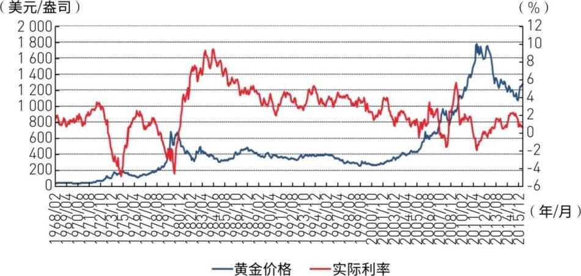
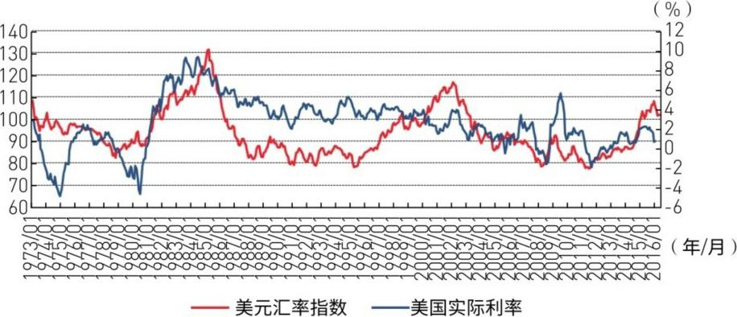
如何理解黄金价格在中、短期的运行逻辑。应该如何解读黄金价格在中期跟随商品产能周期运行的规律？我们认为，购买力因素的驱动是黄金的商品属性在中期得到释放的主要原因。针对黄金购买力的讨论通常围绕两个层面展开。一是能源、金属、农产品、工业原材料价格的整体波动所带来的物价水平的变化。二是全球超额流动性水平，具体表现为核心国家的马歇尔K值（即广义货币供给量/GDP）。
关于金价与物价水平的关系很好理解，有学者证明黄金存在3.2倍的购买力常数，也即长期黄金价格与美国CPI的定基指数的比率为3.2倍。而根据历史上二者的走势不难发现，金价与CPI同比增速在部分时期表现出很强的相关性，尤其是物价水平大幅上升将推动黄金价格大幅上涨。能源、资源品价格的波动可以通过购买力以及通胀预期渠道作用于金价，我们可以看到，随着商品金融属性的增强，大宗商品与黄金价格的关联性在2000年以后进一步上升。在流动性水平方面，我们以美国、欧元区、日本、中国和英国五大经济体的M2值和GDP数据计算马歇尔K值，由于五大经济体占据全球GDP总额的70%，其走势可以作为衡量全球超额流动性主要趋势的指标。通过对比2008年黄金牛市开启之初与2016年初金价大幅反弹期间的马歇尔K值走势，我们发现M2相对于GDP在这两段时期中都出现了快速增长，应该说国际流动性的充裕是2016年上半年黄金上涨的重要推动力（见图13-14、图13-15）。
中期：黄金的商品属性由购买力驱动。为什么中期黄金跟着商品走？因为商品属性被"购买力因素"激活了。购买力从两个层面影响金价：
① 物价水平（通胀渠道）：有学者证明黄金存在一个约3.2倍的"购买力常数"——长期来看，金价约等于美国CPI定基指数的3.2倍。换句话说，通胀率决定了黄金的长期价格中枢。当能源、金属、原材料价格全面上涨→整体物价水平抬升→黄金的购买力被动调整→金价上涨（以维持3.2倍的常数）。这就是为什么2000年以后大宗商品和黄金的价格关联性越来越强——商品金融化加深了这层传导。
② 全球超额流动性（马歇尔K值渠道）：马歇尔K值=M2/GDP，衡量的是"印出来的钱相对于实体经济的冗余程度"。周金涛用美、欧、日、中、英五大经济体（占全球GDP 70%）的数据计算发现：2008年黄金牛市启动时和2016年初金价大幅反弹时，马歇尔K值都出现了快速攀升。逻辑很直接：钱印得比经济增速快→钱变"毛"了→黄金作为"硬通货"的相对价值上升。
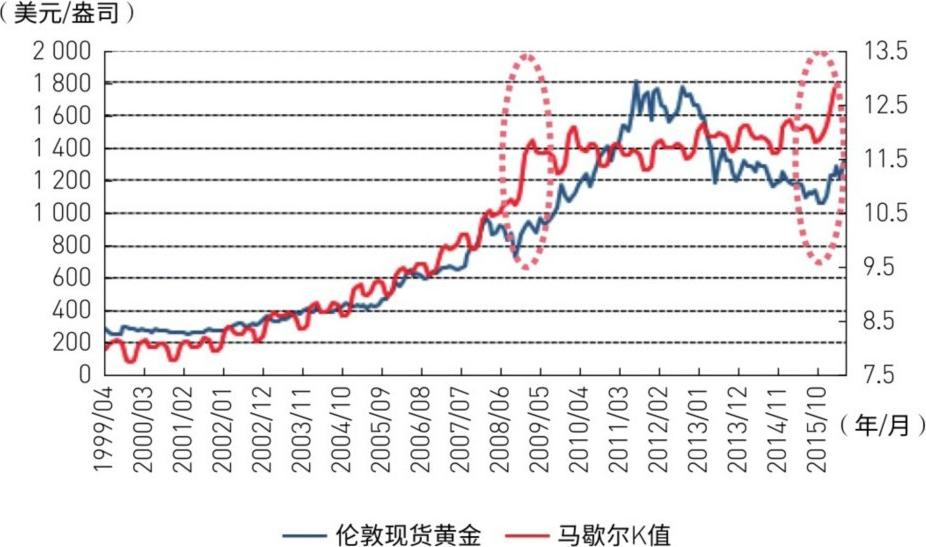
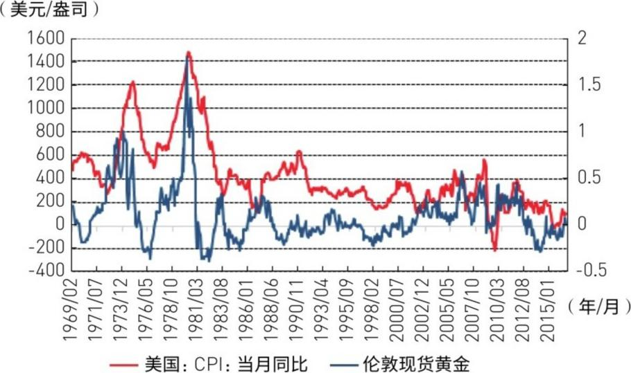
相对于金价在中期的走势，短期内决定黄金资产相对收益的核心因素是全球风险偏好，因此我们可以看到，在实体需求复苏和市场风险偏好修复的库存周期上行期，黄金的表现要弱于代表工业需求和风险资产的金属。而当库存周期运行至高点，实体经济开启下行趋势后，在需求下滑和避险情绪的带动下，黄金相对于金属的表现将更加强势。从另一个层面来看，市场恐慌情绪和悲观预期也是影响黄金价格短期波动的重要因素。通过构造以欧美主权债务利差为代表的主权危机程度指标，我们发现，除去美国在金融危机期间的降息导致的背离，金价与欧美主权债务利差走势在大部分时间里高度一致。此外，回溯历史数据我们还发现，分别反映国际金融市场信用和美国主权信用风险的TED利差与克利夫兰金融压力指数（CFSI）也同黄金价格呈正相关。
此外还需要注意的是，在避险需求的层面上，美元、美国国债与黄金之间短期内的相互关系也不是孤立存在的，三者之间存在隐性的替代关系，并且这种替代关系在市场运行的不同历史阶段有不同形式的表现（见图13-16至图13-21）。一般情况下，当市场情绪趋于谨慎时，同为避险资产的黄金、美国国债与美元会趋于走高，但由于市场的分流作用，此时三者之间会表现出一定程度的替代关系。如果美元在经济运行的某一时期处于确定的熊市阶段，则彼时黄金和美国国债会成为市场投资者的主要避险资产。相反，如果美国国债收益率处于上升通道，则黄金和美元会受到更多投资者的关注。但这种替代关系在市场恐慌情绪达到一定程度后将发生改变，比如2008年金融危机期间雷曼银行破产冲击到实体经济时，黄金、美元与美国国债在市场避险情绪的推动下一起走强。
短期（库存周期级别）：全球风险偏好决定黄金的相对收益。为什么库存周期上行期黄金跑输金属？因为经济复苏→企业盈利改善→投资者愿意承担风险→买金属（工业需求品）比买黄金（避险品）更赚钱。库存周期下行期反过来：经济恶化→避险情绪升温→黄金跑赢金属。这就是黄金-金属比与库存周期严格反相关的原因。
衡量风险偏好的三个量化指标：① 欧美主权债务利差——欧洲国家相对于美国的违约风险溢价，利差扩大=恐慌上升=金价涨。② TED利差（LIBOR-国债利差）——反映国际金融市场信用状况，越高越恐慌。③ 克利夫兰金融压力指数（CFSI）——综合衡量美国金融系统压力。这三个指标历史上都与金价正相关，2016年全部指向"压力上升"。
黄金、美元、美债的三角替代关系：三者都是避险资产，平时互相替代——美元熊市时黄金和国债受益，国债收益率上行时黄金和美元受益。但当恐慌达到极致（如2008年雷曼破产），三者可以同时上涨——因为市场已经不管"替代"了，所有能避险的资产一起抢。2016年上半年正是这种情况：脱欧公投+外汇动荡+金融压力创新高→黄金的避险属性被全面激活。
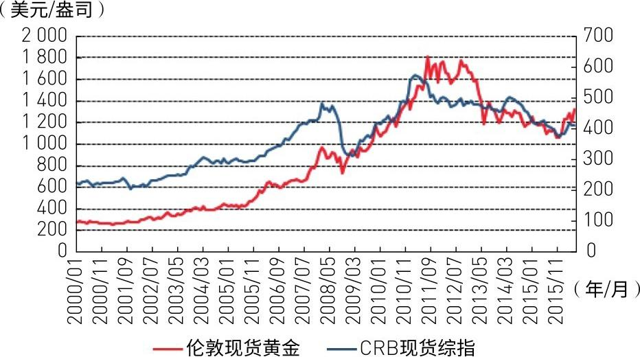
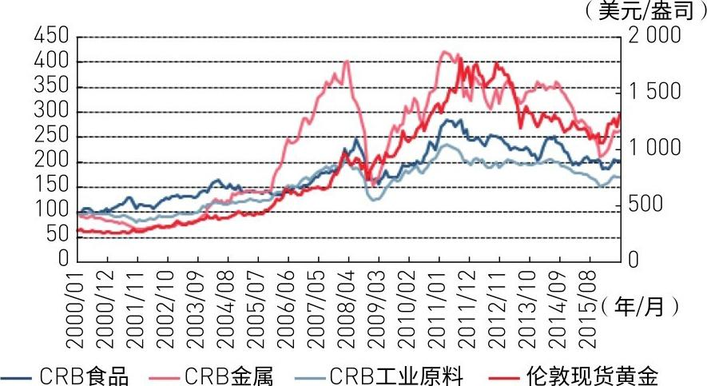
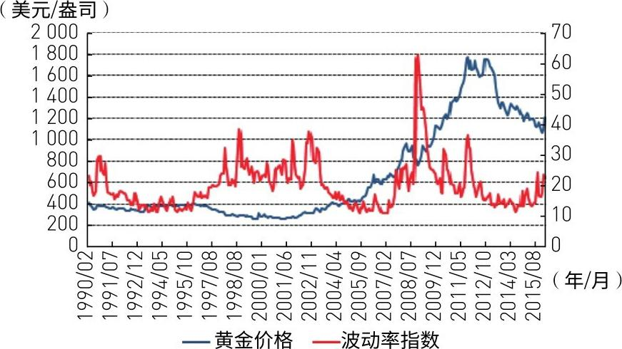
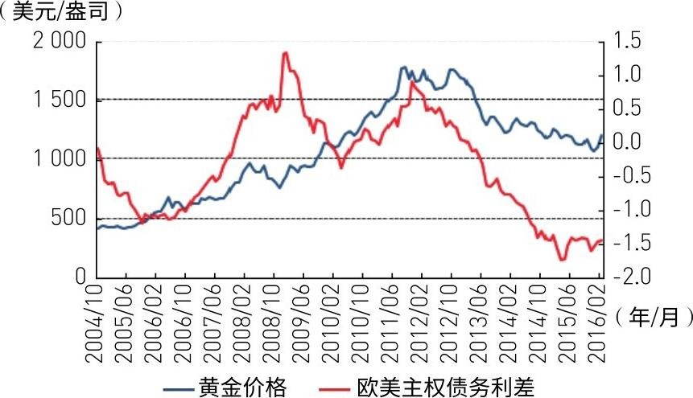
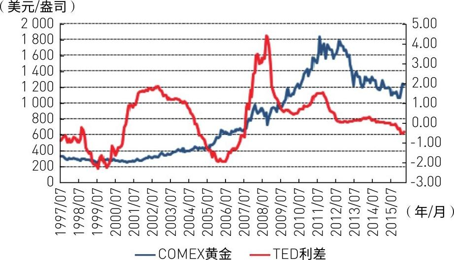
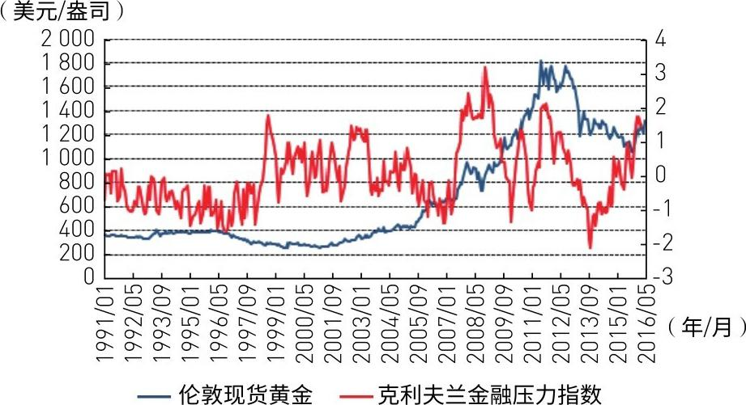
下面我们单纯从数量关系的角度对黄金价格的驱动因素进行分析验证。由于全球风险偏好指标难以被持续稳定地量化，因此我们假定在经济系统平稳运作期间，直接驱动金价运行的常规因素主要由前两个层面的市场变量组成。出于时间序列的频率和可得性，我们选取美国实际利率（剔除CPI的美国10年期国债收益率）、美元指数、马歇尔K值（美欧日中英M2/GDP）、CRB金属价格指数和布伦特原油价格作为黄金市场的解释变量，并通过模型和1999年至今的数据对黄金价格的影响因子进行量化分析。
基于历史数据的实证分析结果显示：实际利率（美国10年期国债实际收益率）和美元指数对金价的冲击为负，而马歇尔K值、金属和原油价格对金价的冲击为正。在影响效力上，金属价格水平、实际利率、美元指数走势以及马歇尔K值是2000年之后黄金价格波动最主要的解释变量，由于原油价格的走势更多受到地缘政治情况的影响，因此其在大部分时间内对黄金价格的影响较弱（见图13-22、图13-23）。
量化分析——用数据验证理论。周金涛团队用1999-2016年的历史数据，选取了五个变量对金价做了解释力分析。做法是：把实际利率（10年期美债收益率扣除CPI）、美元指数、马歇尔K值（五大经济体M2/GDP）、CRB金属价格指数、布伦特原油价格作为解释变量，看它们各自对金价的影响力有多大。
结果很清晰：
正向冲击（这些涨→金价涨）：马歇尔K值 > 金属价格 > 原油价格。马歇尔K值排第一说明流动性泛滥是推升金价的最强动力——印钱越多，黄金越贵。金属价格排第二说明商品属性确实在起作用。原油排最后——因为油价受地缘政治干扰太大（OPEC开会、中东战争等），与金价的统计关联不稳定。
负向冲击（这些涨→金价跌）：实际利率 ≈ 美元指数，两者影响力接近。实际利率上升=持有黄金的机会成本上升=金价被压制。美元走强=以美元计价的黄金变贵（对非美投资者）=需求减少=金价跌。
综合解释力排序：金属价格 ≈ 实际利率 > 美元指数 > 马歇尔K值 > 原油。换句话说，黄金短期走势主要看三样东西：大宗商品大环境、美国加息预期、美元强弱。流动性和油价是次要的。
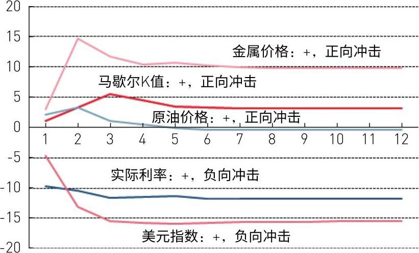
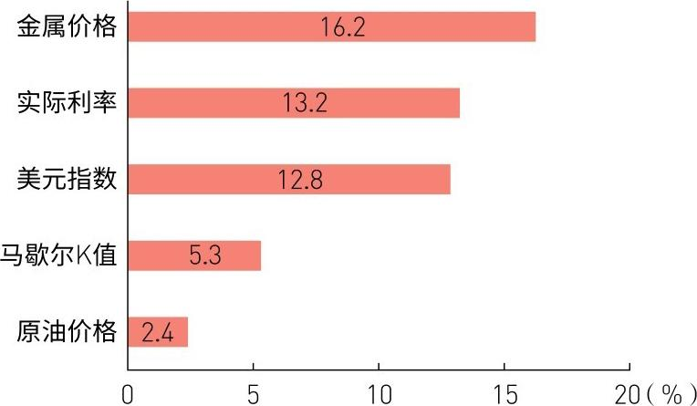
历史上黄金价格与影响因素的背离。虽然理论上讲美元与黄金应呈负相关变动，但不排除在特定时期二者的常规关系发生中断。结合黄金价格与美元指数动态相关系数的历史数据可以发现，1971年至2016年，黄金与美元在很多时点都呈现出明显的同步上涨趋势（见图13-24、图13-25）。进入21世纪后，黄金与美元之间的不稳定性加剧，2005年以来金价和美元指数共有4个时期呈同步上涨：2005年（2005年1月—2005年10月）、2008年（2008年6月—2009年2月）、2010年（2009年12月—2010年5月）和2011年（2011年07月—2012年08月）。总体来看，黄金和美元同步上涨期一般有如下特征：（1）大宗商品价格持续上涨，通胀水平抬升，而实体需求增长放缓，经济出现滞胀迹象或已步入滞胀；（2）通常伴随石油危机、次贷危机、债务危机等地缘政治或经济冲击的发生，市场谨慎和避险情绪显著升温；（3）基于通胀预期和对美国实体经济发展前景的考虑，美国国债收益率趋于上行，使得市场投资者选择美元和黄金作为避险资产。
黄金和美元同步上涨的「反常现象」：理论上金价与美元负相关，但历史上有4个时期（2005、2008、2010、2011）二者同步上涨。共同特征：大宗商品涨→通胀抬升→经济出现滞胀+地缘危机→美债收益率上行→投资者同时选择美元和黄金避险。在滞胀环境中，黄金和美元可以同时走强。
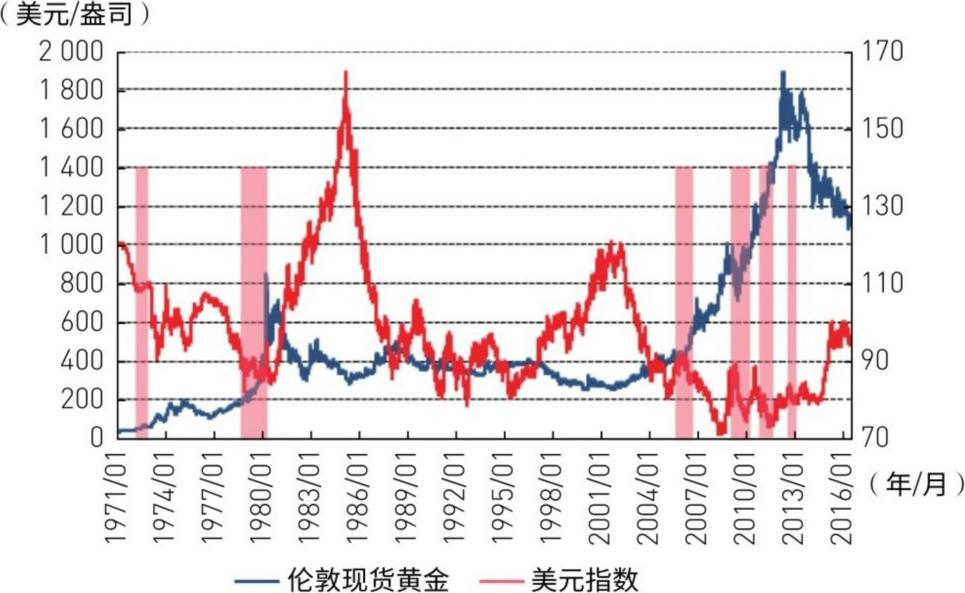
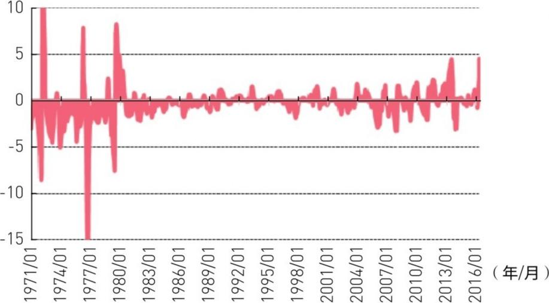
由于黄金自身独有属性的存在，黄金价格与工业金属、能源价格之间的正向关系也时常出现中断。参照历史数据，黄金价格与商品价格的背离通常表现出如下特征：（1）经济危机或信用体系动荡引起避险情绪升温，会迅速推高黄金价格，造成黄金价格与其他商品价格走势分离，如1972—1973年布雷顿森林体系的崩溃、1993年的全球经济危机、2001年「9·11」恐怖袭击事件的冲击，以及2008年爆发的全球金融危机与2012年的欧债危机；（2）石油危机期间油价的大幅上涨将使黄金-工业金属比大幅抬升，如第二次石油危机期间黄金价格与工业金属价格的分离；（3）黄金价格的上涨略微滞后于一般商品价格上涨，历史上的多段时期都表明了这一特征（见图13-26、图13-27）。
黄金与商品价格的背离时机：信用体系动荡（布雷顿森林崩溃、911、2008金融危机、欧债危机）→避险情绪爆拉黄金→金价与工业金属分离。石油危机→油价飙升+经济滞胀→黄金-工业金属比大幅抬升。另外，黄金上涨通常略微滞后于一般商品——商品先涨，通胀预期起来后黄金再跟上。
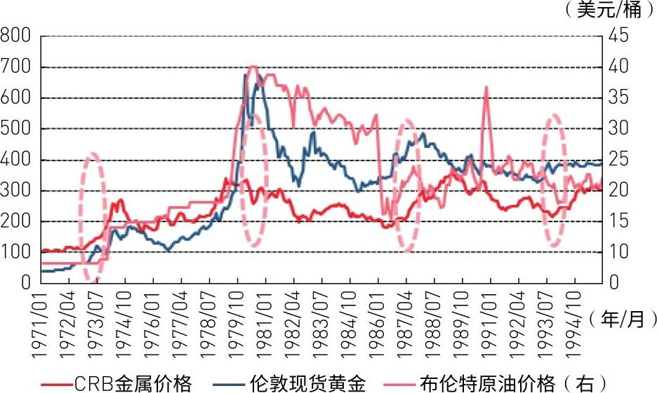
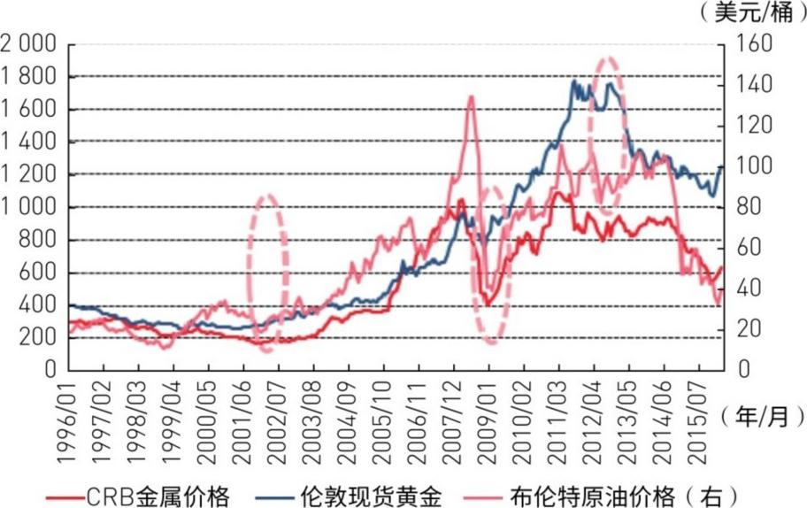
通过黄金价格运行逻辑的分析，我们看到2016年以来金价的反弹并非单一市场变量推动的结果。从购买力层面看，自2015年底开始的全球超额流动性（马歇尔K值）的攀升以及商品价格反弹带来的通胀预期是推升金价的重要原因，而美国实际利率的下降和美联储出于平衡风险而对市场的呵护在货币层面也为金价的上行提供了动力。此外，包括全球外汇市场动荡和英国脱欧公投在内的不确定性事件又刺激了黄金的避险属性，其中克利夫兰金融压力指数已经在2016年创下了自欧债危机以来的新高。由此可以看出，金价在2016年上半年上涨的逻辑根植于全球市场大环境的改变。
虽然我们已经对当前长波运行的阶段进行了定位，即当前康波周期的位置是从衰退向萧条过渡期的后半段。但长波走向萧条的过程并不是瞬间完成的，在长波走向萧条的过程中，把握第三库存周期带来的经济阶段性企稳以及价格体系的修复是进行资本市场投资的关键。基于历史数据的数量关系分析，实际上也帮助我们进一步确认了黄金市场的短期运行所要遵循的基本规律。应该说，实际利率、美元、大宗商品价格以及马歇尔K值的走势能够在很大程度上解释黄金价格在短期的常规波动。回到当前的时间窗口，马歇尔K值的大幅走高在流动性层面为黄金的中期上涨提供了基础，接下来围绕第三库存周期的运行节奏分析其他金价驱动因子的运行脉络是理解未来黄金运行逻辑的重点。而黄金-金属比跟随库存周期的波动特性，实质上也告诉了我们如何把握黄金和大宗商品在本轮库存周期的投资节奏。
2016年上半年金价反弹的多重动力：流动性泛滥（马歇尔K值攀升）+ 商品反弹带动通胀预期 + 实际利率下降 + 美联储偏鸽派 + 英国脱欧等不确定性事件 → 四层属性同时发力！这不是单一因素驱动，而是大环境的系统性改变。
中、美第三库存周期已分别于2016年上半年先后触底，以我们对库存周期运行规律的理解，在后续库存周期中作用于黄金价格的市场变量将按如下节奏运行。
（1）大宗商品价格将继续沿袭一波三折的路径反弹。2016年上半年我们先后经历了由中国供给侧改革和第三库存周期复苏所引领的大宗商品的第一波行情，以及进入5月后在通胀预期和需求检验的干扰下出现的技术性回调，从大宗商品历史时间和空间调整来看基本到位，当前大宗商品逐步迈入第二波主升浪。在报告《弱需求下的价格修复》中，我们围绕历史经验和弱需求下的价格修复逻辑解答了大宗商品第二波行情的时间、幅度以及动力机制问题。2016年下半年价格再度上涨的核心源于中周期调整中企业经营困难对利润率改善的诉求和低库存的助力。供给侧发力、下半年旺季和美国第三库存周期的逐步修复，将助力商品价格再度向上并带动经济修复，这一阶段大概率出现在8月之后，并持续到第四季度。
（2）物价步入温和通胀区间，并持续修复。根据库存周期以及商品市场的运行节奏，我们判断下半年美国PPI将继续处于上行通道，并且受前期低基数效应以及传导时滞的影响，短期内PPI端的抬升将不会对通胀预期产生干扰。也就是说，我们将经历一个经济企稳背景下温和通胀的阶段。而在库存周期到达高点位置附近后，在商品市场反弹和物价体系修复的带动下，货币实际购买力将不断遭到削弱，即第三库存周期物价运行的节奏将是由温和通胀迈向类滞胀的过程，这一点也由美国历史规律所证明。
（3）实际利率整体呈下行走势。按照周期的运行逻辑，经济周期的上行期一般都伴随着经济数据好转和需求复苏，此时市场对经济增长的预期高于通胀预期。反映在实际利率的走势上，即10年期国债收益率的上行速度超过CPI，因此实际利率通常在库存周期上行期走高。反之，在经济周期下行期走低。而通过分析实际利率在第三库存周期的走势，我们发现第三库存周期中的另一个重要特征，即物价的整体抬升速度将超过10年期国债收益率的上行速度。事实上，实际利率的走低也可以被视为「滞胀」风险在利率层面的体现。同走向滞胀的过程一致，实际利率在第三库存周期的下行也不是瞬间完成的，往往先经历一段缓慢的上涨期，而后才会大幅走低。
（4）美联储的政策将继续以平衡全球风险为主旋律。在脱欧危机风险解除后，美国将重新开启加息之路，我们维持2016年下半年美联储一次加息或不加息的判断，年内最可能的时点是在12月。但可以肯定是，第三库存周期导致的经济反弹强度无法支撑持续的强势美元，并且加息后美联储可能会明确释放需要降低加息次数的信号，加息落地后美元将小幅走弱。及至美国库存周期运行至中后期，全球市场滞胀预期重燃时，美元将逐渐完成由风险资产向避险资产的转化，彼时在滞胀逻辑的发酵下，美元将不再是黄金的制约因素。
第三库存周期（2016-2017）影响金价的四个驱动因子运行节奏：
大宗商品：一波三折反弹。第一波（2016上半年）已完成→第二波主升浪（2016下半年至Q4）→供给侧+低库存+旺季+美国第三库存周期共振。
物价：从温和通胀走向类滞胀。前期PPI温和抬升无碍→库存周期高点后通胀加速→货币购买力被蚕食→滞胀风险。
实际利率：先微涨后大跌。第三库存周期的特征：物价涨速超过国债收益率涨速→实际利率整体下行→滞胀信号。
美联储：平衡全球风险，加息力度弱。2016年最多加息1次（12月），经济反弹弱→无法支撑强美元。进入滞胀逻辑后，美元变成避险资产→不再压制黄金。
底部逻辑：从整个库存周期看，黄金的上涨趋势会持续。库存周期上行期初段（2016下半年）黄金可能被经济企稳+加息预期阶段性压制——但这是买入机会。当库存周期运行至中后期（2017年），滞胀逻辑发酵+实际利率下行+避险扩散→黄金相对收益大幅提升。这是第三库存周期中黄金表现最辉煌的阶段。
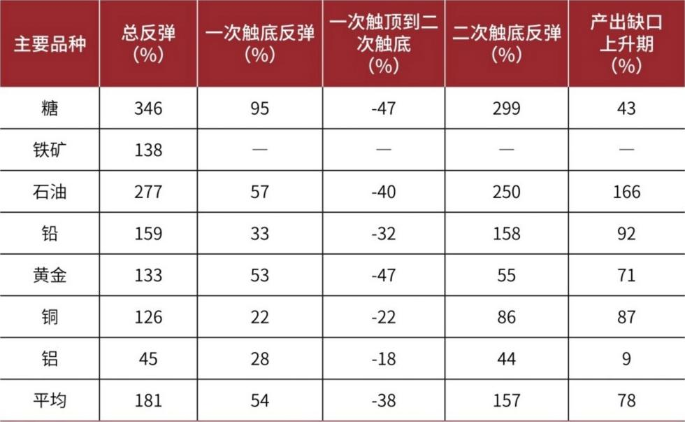
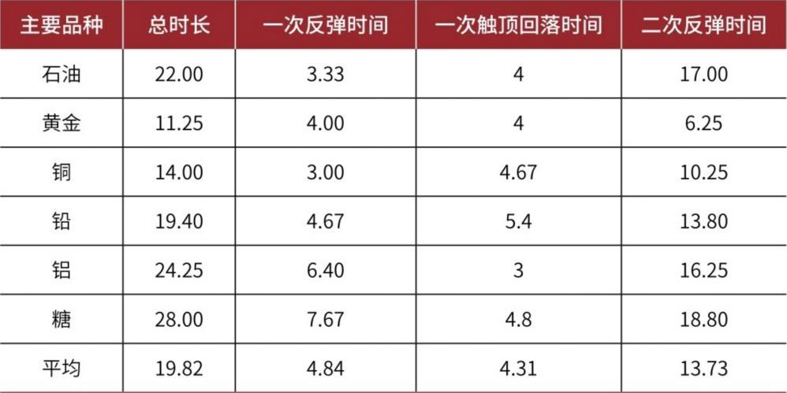
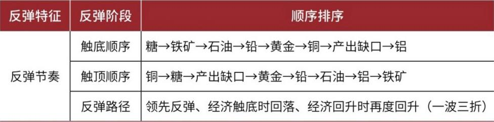
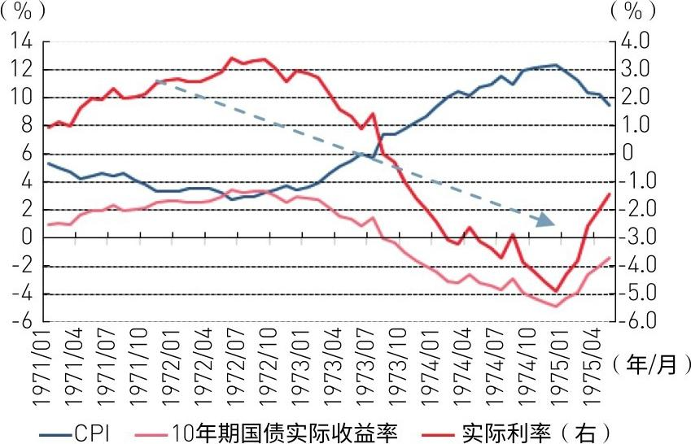
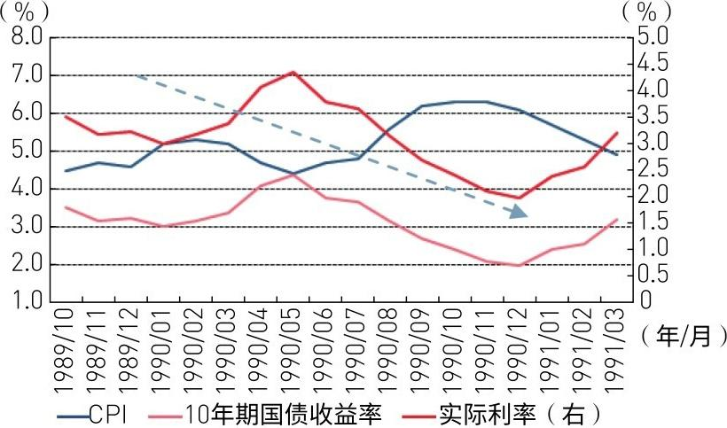
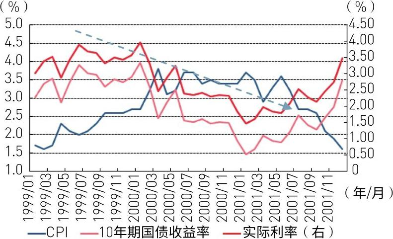
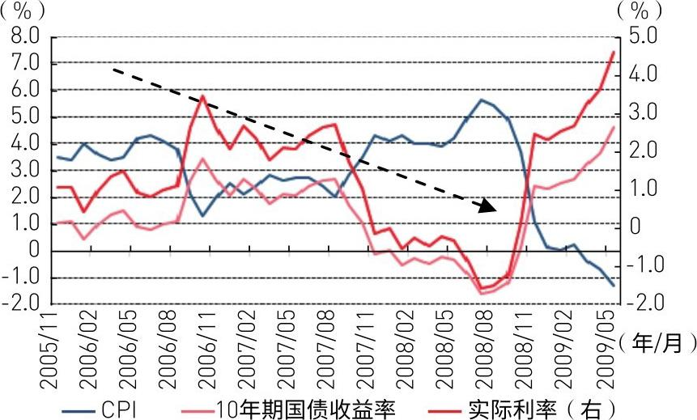
在20世纪30年代多次出任英国首相的麦克唐纳曾说：「金融是资本主义的神经系统。」而此前250年里，资本主义体系的金融组织机制和国际货币关系都与黄金密切相关，可以说黄金的价格波动历程构成了近现代经济运行的神经脉络，以历次货币体系的建立和更迭作为框架分析黄金市场的运行，有助于我们从另一个层面解读黄金市场的运行规律。事实上，作为全球经济系统的骨骼，货币体系的演进是长波周期运行的重要组成部分，针对黄金价格与货币体系关系的研究也为黄金价格的长周期波动提供了佐证。
前面用周期框架分析了金价波动规律，现在换个视角——从300年货币体系演进看黄金。金本位→布雷顿森林→美元体系，货币制度与黄金的关系就是一部近代金融史。
金本位时代的金价波动——从稳定的代名词到「金色的羁绊」。虽说黄金作为货币古已有之，但实际上全球范围内的金本位体系直至19世纪70年代才得以建立，在金本位体系下，黄金作为世界各主要国家的货币锚，将国际汇率限制在一个有限的范围内波动，这种全球意义上的固定汇率制满足了当时国际贸易和结算的需要，并且通过「物价-现金流动」机制抑制了复本位制下的混乱和外部不平衡，因此，对全球大部分国家来说，金本位一直都是汇率稳定和国际收支平衡的代名词（见图13-32）。由于两次世界大战破坏了全球的黄金流通机制，金本位制可以分为经典金本位阶段和战时金本位阶段。
在经典金本位阶段，黄金被作为唯一的准备金，银行券和辅币可以与黄金实现自由兑换，各国央行协调黄金的自由出入。第一次世界大战的爆发中断了全球金本位的运行，战后虽然在大国主导下金本位被再次建立，但与经典金本位相比，战时金本位是一种不完全的金本位制度。这种不完全主要体现在大国与小国兑换地位的差别上，战后只有英镑和法郎可以在有限制的条件下被兑换成黄金，而小国实行金汇兑本位制，即货币不能直接兑换黄金，只能通过固定与英镑和法郎的兑换比例与黄金挂钩。
金本位能够发挥稳定作用的关键在于公信力和国际合作。公信力源于政府对自由兑换的承诺和收支平衡政策的坚守，这是金本位运作的第一层保障。当公信力出现动摇时，还需要国际合作提供第二层保障。国际合作，也即大国央行必须采取一切必要的措施维护黄金储备量和本国货币的可兑换性，而在任何国家的黄金平价遭到威胁时，其他国家也将施以援手。但是世界大战的爆发破坏了金本位运作的根基。首先，公信力的丧失使得战时金本位易于遭受全球不稳定的冲击。其次，战后的金本位更加缺乏弹性，国际合作在国内政治约束、国际争端和货币政策独立性诉求的束缚下也渐渐无果而终。
正因如此，战时金本位仅维持了6年就造成了全球范围内的通货紧缩、支付危机和银行恐慌，随后各国央行不得不相继退出金本位，货币体系的崩塌与金融危机相叠加，使经济低迷转变为一次前所未有的大萧条。在终止黄金的可兑换性后，世界各国的政策决策者开始操纵货币，并采取「以邻为壑」的竞争性贬值，进一步加剧了全球的大萧条。金本位的公信力和合作瓦解后，带来的直接结果就是金价的迅速膨胀。从1931年核心工业国家退出金本位到1935年，名义黄金价格涨幅达到100%，实际黄金价格（扣除美国CPI）涨幅达到125%。从黄金与金属、农产品的价格比走势也可以看出，除了一战期间物价高涨造成黄金价格相对大幅缩水，在整个金本位时代，黄金实际购买力围绕一个中枢上下窄幅波动，而1931年以后，黄金相对于金属和农产品的实际购买力都涨了一倍（见图13-33）。
第一阶段：金本位时代（1870s-1914经典期，战后短暂恢复）。金本位=汇率稳定+国际收支平衡的代名词。运作需要两个条件：公信力（政府承诺自由兑换）+ 国际合作（大国央行互相支援）。一战破坏了这一切。
战时金本位（战后-1931年）：不完全的金本位，大国小国地位不平等，只持续了6年→全球通缩+支付危机+银行恐慌→各国相继退出→竞争性贬值→大萧条加深。1931年核心国退出金本位到1935年：名义金价涨100%，实际金价涨125%，黄金相对金属和农产品购买力翻倍。
核心教训：货币体系的崩溃=黄金的暴涨。当人们对纸币体系失去信心时，黄金的信用对冲属性会爆发出惊人力量。
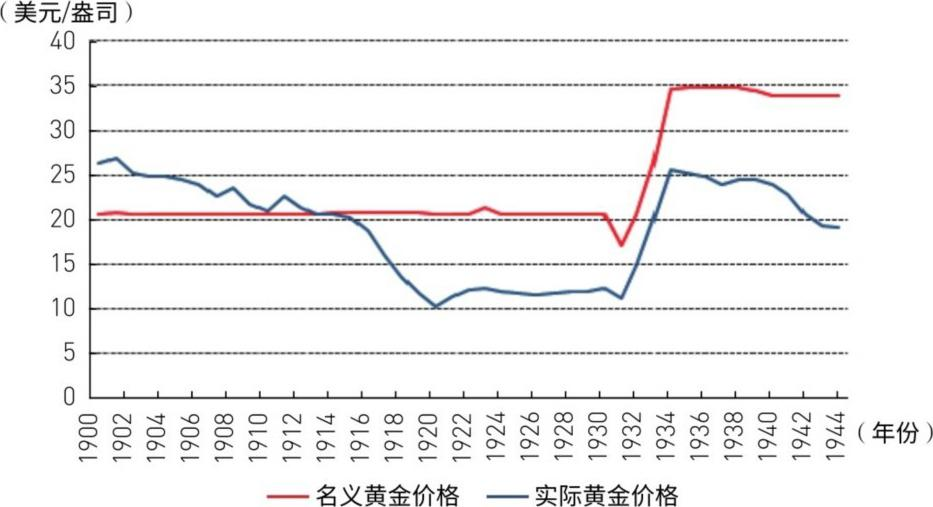
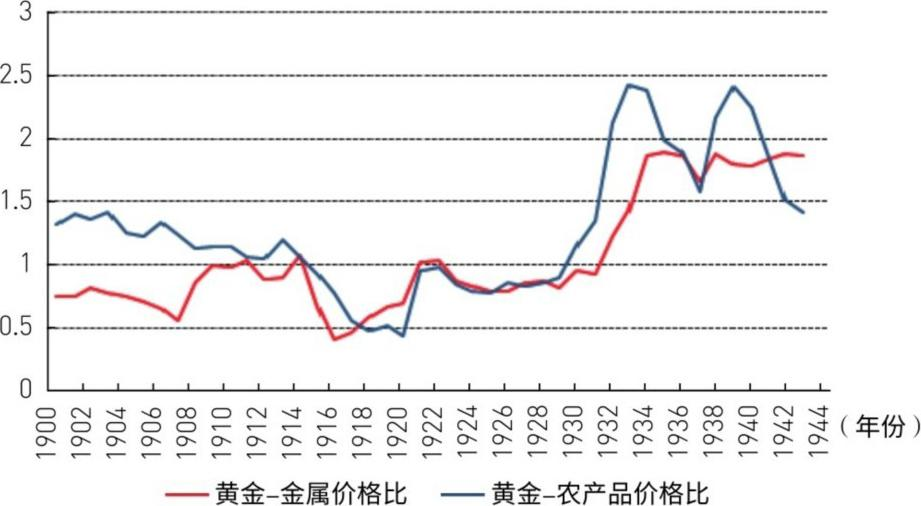
布雷顿森林体系时代的黄金价格波动——美元的崛起和黄金的反抗。二战结束后，以美元为中心的布雷顿森林体系随之建立，这种「双挂钩」的汇率制度实质上是后金本位时代的一种延续，标志着战后国际金融秩序的重新分配。新体系能够建立，一方面是因为战后经济和国际贸易的恢复在客观上需要稳定的汇率制度的支持，更重要的是，美国世界第一的国际地位和占全球70%的黄金储备决定了美元在世界货币新秩序中的核心地位。
黄金-美元双挂钩体系的运作同样需要公信力和国际合作的维护。公信力源于美国履行按固定平价以黄金兑换美元的义务，国际合作主要靠其他国家的资本管制、盯住汇率制度，以及国际货币基金组织的协调。实际上，在战后的近30年里，这种可调节的固定汇率制度在很大程度上支持了全球经济的复苏和繁荣，但是由于特里芬难题的存在，美国逐渐丧失了布雷顿森林体系赖以维持的美元公信力，而成员国之间的合作也由于内外部失衡的长期冲突渐行渐远。迫于压力，1968年之后黄金市场开始施行双轨制，即可以在市场上自由交易黄金，这导致金价上行压力不断增加，虽然美国和国际货币基金组织试图通过各种手段打压黄金，但在市场的力量下最终放弃（见图13-34）。
在这种背景下，1971年尼克松政府关闭了黄金兑换窗口，1973年欧洲国家宣布对美元的联合浮动，正式宣告了黄金-美元本位体系就此解体。35美元兑1盎司黄金的固定比例随之不复存在，黄金价格应声上涨。1970—1975年，名义黄金价格和实际价格的累计涨幅分别达到340%、250%，黄金相对于金属和农产品的购买力也大幅攀升（见图13-35）。整个20世纪70年代至80年代，黄金在与美元的对抗中占尽上风，黄金市场迎来了10年的超级牛市，其间名义黄金价格涨了20倍。
第二阶段：布雷顿森林体系（1944-1971年）。美元与黄金挂钩（35美元=1盎司），各国货币与美元挂钩。美国拥有全球70%黄金储备→美元=「美金」。特里芬难题：美元要满足全球储备需求就必须持续输出美元（贸易逆差）→美元信用被稀释→公信力瓦解。1968年黄金双轨制→官方价和市场价分裂→1971年尼克松关闭黄金兑换窗口→1973年体系正式崩溃。
1971-1975年黄金大爆发：名义金价涨340%，实际金价涨250%，整个70-80年代金价涨了20倍（35→850美元）。布雷顿森林体系的崩溃=黄金对美元的第一次历史性胜利。
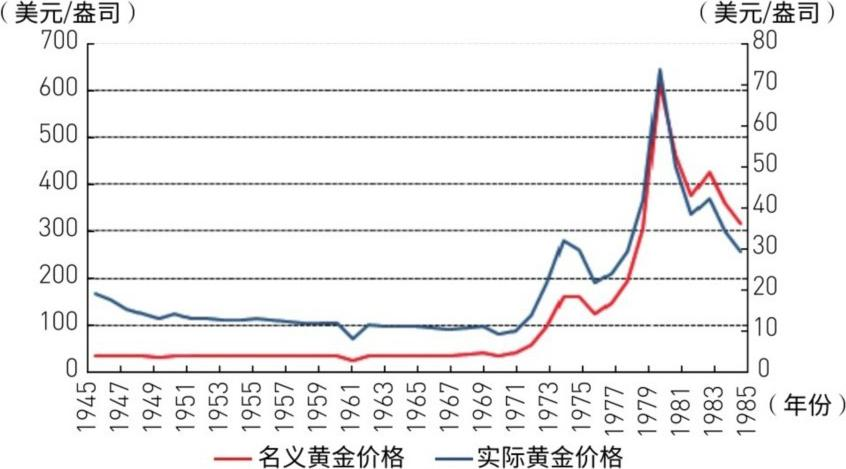
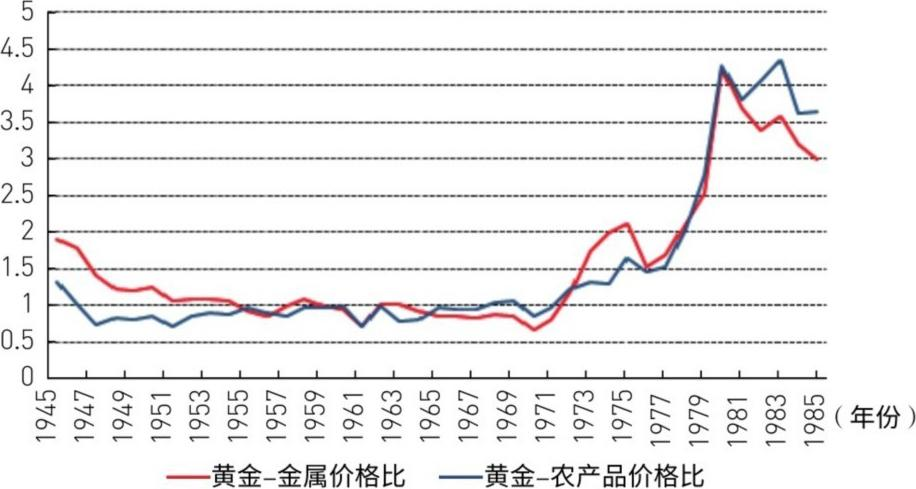
关于「美元体系」与黄金的思考。布雷顿森林体系崩溃后，美元成为世界货币体系的中心货币，体现在美元在商品计价、交易结算和外汇储备等方面的垄断性优势上。在脱离了贵金属属性后，美元不但挽救了自己国际储备货币的地位，还将美联储推上了「世界中央银行」的王座。一方面是因为美元停止兑换黄金后，套牢了相当一批持有大量美元储备的国家，并且美元的替代货币尚未出现，外围政府和央行的外汇储备只能转向美国债券等虚拟资产。另一方面，美国通过与沙特阿拉伯等国家签订协议掌控了石油等大宗商品的计价权，并依靠成熟的金融市场和国际资本流动体系维系了美元货币锚的地位。此后，美元背后的公信力只靠美联储的信用做背书，再无贵金属的约束。
第三阶段：美元体系时代（1971至今）。布雷顿森林崩溃后美元反而成了世界中心货币——凭什么？凭三个优势：石油等大宗商品用美元计价（石油美元体系）、成熟的金融市场和资本流动体系、没有替代货币。美元的信用背书从黄金变成了美联储的信誉。但这也意味着：美元体系失去了硬约束，稳定性完全取决于美国自身的经济和信用状况。
美元体系的失衡历程。当今美元体系的失衡问题是学术界和业界老生常谈的话题，这种失衡的根源依然来自黄金-美元本位体系下矛盾的延续，并且叠加了新时期世界经济格局和经济周期等因素的冲击。美国尼克松时代的财长在一次会谈中说过：「美元是我们的货币，却是你们的问题。」特别是当美元体系不再承担稳定汇率的义务时，公信力与国际合作就变得异常脆弱，这句话成了20世纪70年代至2016年国际货币体系的真实写照。美元体系运行的矛盾主要出自地位的不平等、货币的不稳定以及经济的不平衡。
（1）地位的不平等。最直观的体现是美联储拥有流动性创造的绝对特权，从而导致了国际利益分配的非对称性，而美国依靠其成熟的资本市场和美元流动体系，又为这种国际经济格局提供了支持和保障。具体表现为，一方面美国依靠其政治军事实力以及在国际金融期货市场的地位，控制原油等大宗商品的定价权，使得美国可以通过印刷钞票换取他国的资源和商品。另一方面，美国可以依靠发达的金融中介和丰富的金融衍生产品吸引国际资金流入，并且通过美元扩张排挤其他国际货币，使得国际货币体系缺乏弹性。
（2）货币的不稳定。主要由两个事实造成：一是特里芬难题在浮动汇率制度下依然存在；二是全球金融市场在美元体系下对美联储预期管理的依赖。除此之外，美元体系下另一个重要特征是，全球金融市场的最后贷款人角色在一定程度上由美联储担当。因此，在经济运行的不同阶段，美联储需要承担调节市场情绪和流动性的重任，但由于金融市场和实体经济的繁荣与萧条都难以量化，这就导致全球市场经常在过度流动性、金融泡沫与危机之间切换，特别是当经济形势不振而美联储的资源和资产负债结构又开始捉襟见肘时，市场枯竭将在自我强化的趋势下愈演愈烈，从而导致外汇和金融市场更加剧烈地动荡。
（3）经济的不平衡。在美元体系下，由国际贸易和资本流动催生的全球经济的失衡特征表现为：美国仍是大量经常账户逆差的核心国；新兴市场国家和发展中国家的顺差明显增加；贸易和投资增长率远超GDP，虚拟经济发展速度加快，全球经济失衡规模在这种背景下持续扩大。可以看到，在美元体系下，造成贸易和经济失衡的根源仍然没有被消除，并且在高速的资本流动中有进一步加深的趋势。除了贸易逆差渠道，资本项目是美国输出流动性的另一条重要渠道。随着全球对储备资产需求的增加，市场对具有主权财政清偿能力的安全资产的需求也将增加。这就意味着美国国债发行量将随着全球储备资产需求的扩张而扩张，但债券的发行规模对主权债券的清偿力所产生的负面作用也将越来越大，考虑到发达国家的普遍债务规模和收益率水平，我们正面临一个无解的悖论。
美元体系的三大矛盾：
地位不平等：美联储有流动性创造的绝对特权→印美元换全球资源和商品→不公平。同时美元排挤其他货币→国际货币体系缺乏弹性。
货币不稳定：特里芬难题在浮动汇率下依然存在+全球市场依赖美联储预期管理→经常在过度宽松和危机之间切换。
经济不平衡：美国持续逆差+新兴国顺差→虚拟经济远超实体经济→全球失衡不断扩大。而且全球储备资产需求增长→美债供给必须增长→但发债越多清偿力越弱→无解的矛盾。
一个精彩的总结：「美元是我们的货币，却是你们的问题。」——当美元体系不再承担稳定义务时，这句1970年代的话成了整个浮动汇率时代的真实写照。
美元体系的新挑战。
（1）石油美元、商品美元的萎缩。除了以上传统的经济失衡因素，石油美元、商品美元的萎缩是当前美元体系面临的新挑战。石油货币循环机制是当前维系全球美元体系的重要一环，BIS Global liquidity indicators季度监测数据显示，受原油价格下跌影响，2015年第四季度石油出口国居民跨境存款减少790亿美元，同期全球跨境金融和衍生品交易量减少6510亿美元，后者自2014年以来一直处于萎缩态势。根据季度数据估测，国际金融体系中的每笔石油美元存款都将牵动6～7倍等额的跨境交易（见图13-36、图13-37）。按照当前每年原油和相关产品的贸易量及石油货币体系创造的流动性（至少等于全球贸易总量），其总价值应超过6.8万亿美元，约占美国GDP的45%。但从目前来看，该体系的支撑因素正在逐渐趋于弱化。首先，从世界各国原油的供应机制来看，长期的地缘政治策略使得重要石油需求国都能确保自己石油链条的安全性。其次，从能源观念和技术角度看，伴随着新能源兴起和页岩油革命的到来，全球经济产业对石油能源的重视和依赖在减弱。最后，随着经济长周期走向萧条，实体经济和制造业的脆弱性导致石油需求增长放缓，尽管在涛动周期下石油和商品价格都经历了不同程度的修复，但长期来看，油价的低迷最终将对石油美元体系的稳定性产生影响。
（2）人民币的国际化与去美元化。实际上，布雷顿森林体系崩溃后，世界各国已经充分认识到单一国别垄断货币体系的不足和风险。对此欧洲和日本等国在去美元化道路上进行了各种尝试，自20世纪70年代以来，日元和欧元都曾部分取代了美元的国际货币功能。日本的去美元化是在新的世界货币与经济体系中谋求国际地位和国际利益的产物，是依靠其不断增强的经济实力，从自身的金融深化、改革和发展中完成的。但由于其经济政治方面对美国的依赖，最终日元的国际化并不算成功，IMF的年度报告显示，在世界各国的外汇储备中，日元仅占3.77%。欧洲的去美元化是欧洲各国为实现区域政治、经济均衡、提升国际竞争力协调的产物，欧元的诞生对世界货币体系产生了重大影响，使得国际货币多元化成为可能，也有利于欧元区国家间的自由贸易和市场的完善。但这是多国在相近经济文化背景的基础上以让渡货币主权为代价取得的阶段性成果。英国脱欧产生的动荡动摇了欧元区《马斯特里赫特条约》的货币基础。虽然全球央行会联手维持困局，但宽松的边界近在咫尺，利率已降无可降，欧元似乎大势已去。
与颓态尽显的欧元相比，人民币始终是美元的潜在威胁。2005年7月人民币一次汇改，人民币兑美元升值使中国错失了那一次战略机遇，没有抓住中长期美元资产空出的蓄水池机会，美国得以从金融危机中全身而退。欧元颓势助推了美元仍然强势的地位，而美元资产价格又处于高位，历史的窗口再次打开，人民币能否肩负起美元资产蓄水池的功能在此一举。过去几年，我们可以看到，中国的战略构架已经形成，以一带一路为标志的雁型三角已经被打通，上海合作组织版图不断扩大，人民币国际化稳步推进，地缘政治的新格局正在形成。但另一方面，我们也需要清醒地认识到国内经济的诸多症结，对人民币国际化需要从长期的视角加以审视。
（3）全球负利率蔓延与美联储预期管理的矛盾。金融危机以来，疲弱的经济增长叠加诸多结构逆流，迫使全球央行踏上危险之旅。以伯南克启动第三轮量化宽松政策为始，无论是发达国家还是发展中国家都加入了宽松货币的行列，欧日央行大有后来居上的势头。不断扩张的资产负债表以及负利率政策暂时稳住了短期增长，但与之相伴的是世界各国债务负担率以及偿债率的大幅攀升（见图13-38、图13-39）。近年来，全球经济的分化给世界各国货币及外汇政策带来了严峻挑战，特别是美联储重启加息之路后，平衡全球风险已成为其预期管理的主旋律。2016年以来，非美的全球国家宽松继续加码，日本和欧元区正式步入负利率时代。一方面，利率的长期趋势在本质上由经济增长预期决定，可以看到的是，负利率政策实属央行面对经济潜在增速衰退的被动之举。另一方面，在信用货币制度下，为国际贸易和资金提供流动性是美元的宿命，但由于特里芬难题和中心-外围国家利益格局不平衡问题的存在，国际货币流动性过剩成为常态，加上金融创新的推动以及中心国家利率向外围的传导，最终助推了全球利率的整体下行。我们尚不知晓非美国家货币放水的尽头将产生怎样的变局，但在康波萧条逐渐驶来的背景下，高杠杆、高负债的全球经济环境将不断考验美联储的预期管理和风险平衡能力。
美元体系面临三大新挑战——每一个都在为黄金的信用对冲属性蓄力：
挑战一：石油美元萎缩。原油价格暴跌→石油出口国跨境存款大幅减少（2015Q4减少790亿美元）→全球跨境金融交易萎缩（同期减少6510亿美元）。每1美元石油存款牵动6-7倍跨境交易。石油美元体系总价值超6.8万亿美元（占美国GDP 45%）。三大弱化因素：各国确保石油供应安全→减少对中东依赖；新能源+页岩油革命→石油战略地位下降；长波走向萧条→石油需求增长放缓。油价长期低迷=石油美元体系松动=美元信用基础被侵蚀。
挑战二：人民币国际化。日本尝试过（失败，日元仅占全球外汇储备3.77%）。欧元尝试过（英国脱欧动摇基础，负利率蔓延下举步维艰）。人民币是最大的潜在挑战者——一带一路、上合组织扩大、人民币国际化稳步推进。历史上中国错失过2005年汇改的窗口期，现在窗口再次打开。
挑战三：全球负利率+美联储预期管理困境。日欧正式进入负利率时代→全球央行资产负债表疯狂扩张→债务负担率飙升。负利率本质是经济增长衰退的被动反应。美元体系下流动性过剩成为常态→金融泡沫和危机交替出现。在康波萧条的背景下，高杠杆高负债将不断考验美联储的平衡能力——稍有不慎就是系统性危机。

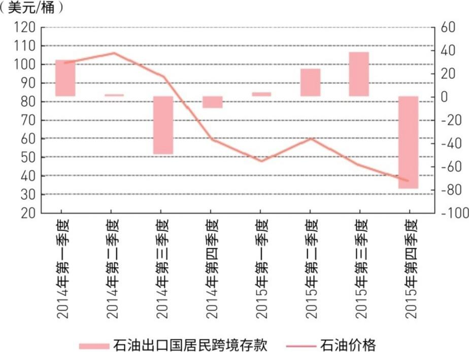
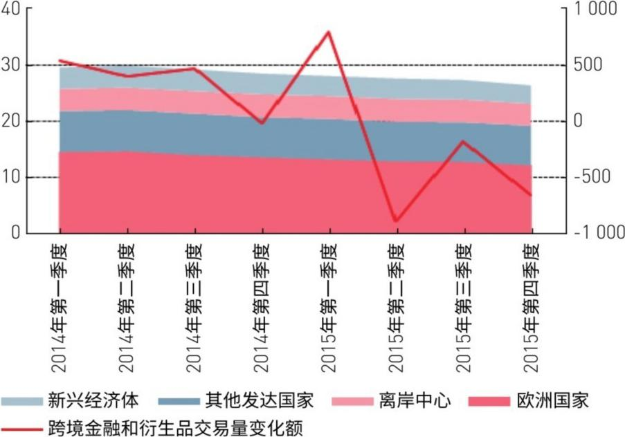
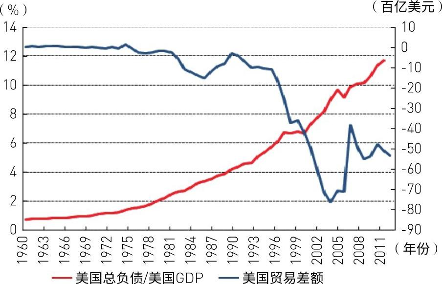
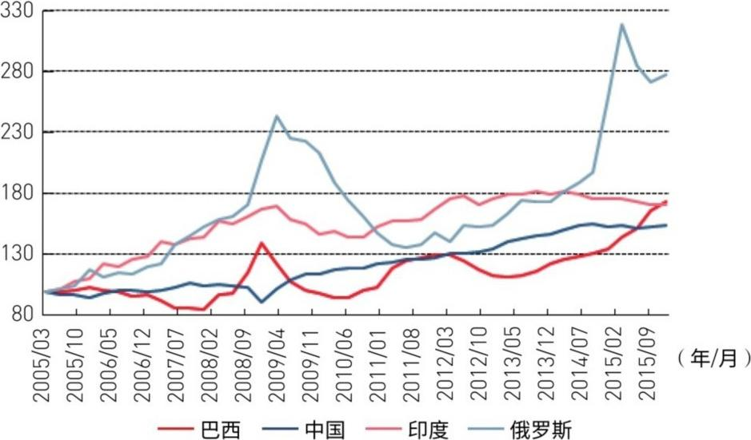
实际上，黄金并没有退出货币的历史舞台，牙买加体系建立的初期，受石油危机导致的高通胀以及美国债务问题加剧的影响，黄金价格一路暴涨，在这一过程中，黄金不仅充当了商品角色，还兼具了对冲美元和信用风险的货币属性。值得注意的是，历次货币体系危机期间都会有维系力量的出现，这体现在黄金价格上涨途中出现的反复，当维系力量不足以支撑其运作时，货币体系最终将在与黄金的碰撞中走向消亡，直至新的货币格局诞生。上文我们已经论述过黄金的根本属性为信用对冲，黄金价格的走势可以被视作长波经济增长的反面，也是货币体系稳健程度的反向指标，并且从近代历次货币体系的演进中所观察到的黄金价格波动节奏与黄金价格在长波周期中的波动规律相互对应。
历史反复验证：货币体系危机=黄金暴涨。每次货币体系崩溃前都会有维系力量→金价上涨中有反复→维系失败→货币体系在对抗黄金中消亡。
黄金价格=货币体系稳健程度的反向指标。从金本位崩溃（1931-1935金价涨125%）→布雷顿森林崩溃（1971-1975金价涨340%）→现在美元体系面临石油美元萎缩+人民币挑战+负利率困境。历史规律显示：每一次货币体系的动荡都是黄金的重大机遇。
从黄金名义上退出货币流通和美元本位的建立，到2016年已经过去了40年。通过回溯近代金本位和布雷顿森林体系的运行，我们可以看到，维持货币体系运作的关键在于公信力和国际合作。但是在美元体系中，应该发挥重要作用的公信力和国际合作的稳固程度都大幅下降，特别是自20世纪末以来，全球经济以及金融的失衡成为常态。从本质上来看，牙买加时代全球经济的失衡只是金本位时代英镑作为中心货币和黄金-美元本位时代下失衡逻辑的一种延续，或者美元「纸本位」的国际货币安排继承了导致经济失衡的根源。这种根源来自单一国别垄断货币必须面临的特里芬难题和中心-外围国家利益格局的不平衡。而除了以上固有的症结，当前的市场环境下美元体系又必须面临更多新生问题，包括石油美元长期萎缩、人民币去美元化以及负利率、高杠杆、高负债环境下美联储预期管理遭受的挑战。我们无法预测当前的美元体系何时走向消亡，但不管未来如何发展，在康波萧条逐渐驶来的背景下，美元体系与黄金的关系都是我们在以后要重点关注的问题。
全章总结：维持货币体系的两大支柱——公信力+国际合作——在美元体系中都大幅弱化。特里芬难题+中心-外围利益不平衡是美元体系的固有缺陷，叠加石油美元萎缩+人民币国际化+全球负利率三重挑战。无法预测美元体系何时消亡，但在康波萧条的背景下，黄金的信用对冲属性将迎来历史性回归。
2016年核心结论：黄金战略配置窗口已打开。短期库存周期反弹可能压制金价→那是买入机会。库存周期中后期→经济走向滞胀→实际利率下行→黄金起飞。库存周期尾声→康波正式进入萧条→黄金迎来5-10年级别的超级行情。